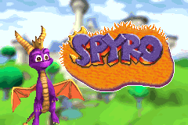

Spyro Orange - The Cortex Conspiracy (USA) (Rev 1)
EEPROM 4K Save Format Spec gbakit Built-In 📺 Joybus 💾 MultiBoot 🎮 4P Link
Cartridge Identity
- Game Code
BSTE(FamilyBST)- Header Title
SPYRO ORANGE- Maker / Revision
7D/ rev1- ROM Size
- 16.0 MiB (16,777,216 B)
- Save Media
EEPROM 4K- SHA-256
974ff2bab4e5d7d20e42184ab4c179cf3d0beda247648ad102d4a3b80b0dd3c9- Engine / SDK Group
comm-005(81 families)
Screenshots

Link Cable & Multiplayer Communications
This title contains detected communication capabilities: 📺 Joybus 💾 MultiBoot 🎮 4P Link.
Detailed protocol specifications, SIO registers, Joybus commands, and MultiBoot sequences are documented in the Link & Multiplayer Reference.
- Multi-Player SIO (4P)
- 16-bit ring network · SIOCNT (
0x04000128) literals:0x025834,0x034130,0x0341b8· SIODATA32/SIOMULTI0 (0x04000120) literals:0x03423c,0x0342a4,0x034314 - GameCube Joybus
- RCNT mode literal
0x0000c304(mode0xC000) at offset0x035b34(RCNT literal at0x035b30) - Single-Cart MultiBoot
- Single-Cartridge MultiBoot (Download Play) client/server handler · Thumb SWI 0x25 (
0xDF25):0x03b38a,0x38008e,0x614bba,0x94acca
Battery Save Format Specification
Open Full Save Format SpecDownload Sample .sav (512 B)Download save-format.json
- Specification Coverage
- 20 mapped fields · 1 verified checksum(s) · Confidence: MEDIUM
- gbakit Built-In Support
- Built-in (BSTE)
- Emulator Verification
- Checksum enforced: Yes · Repaired save accepted: No
gbakit save verify BSTE save.sav
gbakit save decode BSTE save.sav
gbakit save fix BSTE damaged.sav -o repaired.savObserved Battery Save Layout
- Fill Byte & Active Size
0x00fill · 50–65 / 512 B active (entropy 2.71 bits/B)- Active Offset Ranges
0x0–0x7,0xC–0xF,0x1A–0x1B,0x22,0x26,0x2E,0x42–0x43,0x6C–0x6D, +8 more (19 total)- ASCII Magic / Headers
- None detected
- Observed Variable Regions
- 21 bytes across 13 spans:
0xC–0xF,0x1A–0x1B,0x22,0x26,0x2E,0x42–0x43,0x6C–0x6D,0x6F, +5 more - Candidate Checksum/Counter Spans
0xC–0xF,0x1A–0x1B,0x22,0x26,0x2E,0x42–0x43,0x6C–0x6D,0x6F, +5 more- Integrity Check
- Confirmed at
0xC
Text, Fonts & Scene Data
- Primary Text Encoding
- Plain ASCII (uncompressed) (
197ASCII strings) - Font & VWF Indicators
- VWF Width Table 1bpp Font · BIOS SWIs: BitUnPack
0x10:2· LZ770x11/12:2· Huffman0x13:2· RLE0x14/15:3 - Scene & Packaging
30ROM pointer tables (≥32 entries,4≥200) ·177relativeu32TOCs ·237OAM metasprite hits · FourCC:GAX2
Password System
- Save Media
- Battery-Backed (EEPROM)
- Password Class
- Password UI Strings Detected (
password_ui_strings_only) - Password UI Strings
invalid code
Hardware MMIO Subsystems
ppu_display0x80317ec,0x8036e98
Regional Variants & Revisions (Family BST)
- Spyro Fusion (Europe) (En,Fr,De,Es,It) (
BSTP, 16 MiB) - Spyro Orange - The Cortex Conspiracy (USA) (
BSTE, 16 MiB)